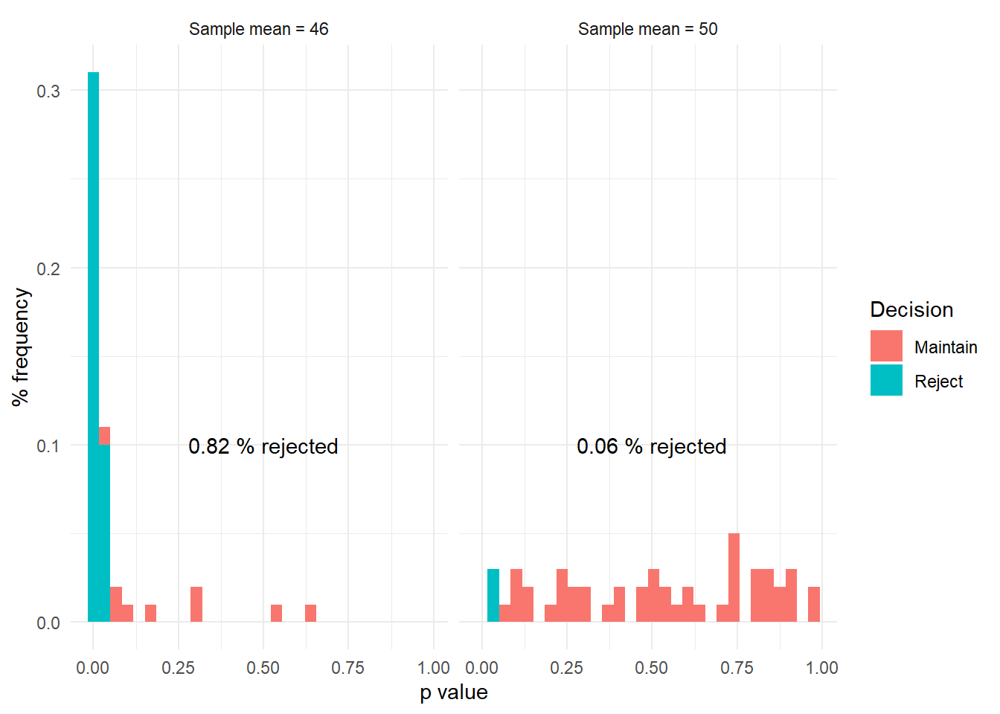
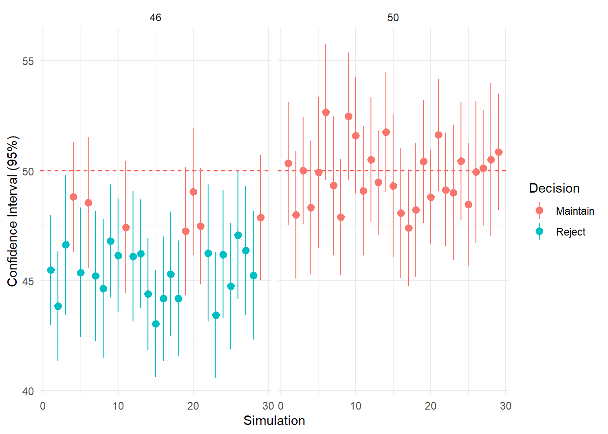

library(tidyverse)## -- Attaching packages ----- tidyverse 1.2.1 --## v ggplot2 3.2.1 v purrr 0.3.2
## v tibble 2.1.3 v dplyr 0.8.3
## v tidyr 0.8.3 v stringr 1.4.0
## v readr 1.3.1 v forcats 0.4.0## -- Conflicts -------- tidyverse_conflicts() --
## x dplyr::filter() masks stats::filter()
## x dplyr::lag() masks stats::lag()s = 50
n = 50
m_1 = 50
m_2 = 50
m_3 = 46
sd_1 = sd_2 = sd_3 = 10
list_sim = list()
p_2 = p_3 = rep(NA,s)
for (i in 1:s){
n_2 = rnorm(n = n, mean = m_2, sd = sd_2)
n_3 = rnorm(n = n, mean = m_3, sd = sd_3)
p_2[i] = t.test(n_2,mu=m_1)$p.value
p_3[i] = t.test(n_3,mu=m_1)$p.value
list_sim[[i]] <- data_frame(n = c(n_2,n_3),
m = c(rep(m_2,length(n_2)),rep(m_3,length(n_3))),
sd = c(rep(sd_2,length(n_2)),rep(sd_3,length(n_3))),
s = i,
p = c(rep(p_2[i],length(n_2)),rep(p_3[i],length(n_3))))
}## Warning: `data_frame()` is deprecated, use `tibble()`.
## This warning is displayed once per session.group <- c(
"46" = 'Sample mean = 46',
"50" = 'Sample mean = 50')
(Simulation = bind_rows(list_sim) %>%
group_by(s,m) %>%
summarize(p = first(p)) %>%
mutate(decision = ifelse(p >= 0.05, 0, 1)) %>%
group_by(m) %>%
mutate(p_decision = mean(decision))) %>%
ggplot(aes(p,fill = factor(decision))) +
geom_histogram(aes(y = (..count..)/sum(..count..))) +
facet_wrap(~m, labeller = as_labeller(group)) +
geom_text(data = Simulation %>% group_by(m) %>% summarize(p_decision = first(p_decision)), x = 0.5, y = 0.1, aes(label = paste(p_decision,"% rejected"), fill = NA)) +
scale_fill_discrete(labels = c("Maintain","Reject")) +
labs(x = "p value", y = "% frequency", fill = "Decision") +
theme_minimal()## Warning: Ignoring unknown aesthetics: fill## `stat_bin()` using `bins = 30`. Pick better value with `binwidth`.
bind_rows(list_sim) %>%
filter(s < 30) %>%
group_by(s,m) %>%
mutate(decision = ifelse(p >= 0.05, 0, 1)) %>%
ggplot(.,aes(s,n,color = factor(decision))) +
geom_hline(yintercept = 50, linetype =2, color ="red") +
stat_summary(fun.data="mean_cl_normal") +
facet_wrap(~m) +
scale_color_discrete(labels = c("Maintain","Reject")) +
labs(x = "Simulation", y = "Confidence Interval (95%)", color = "Decision") +
theme_minimal()